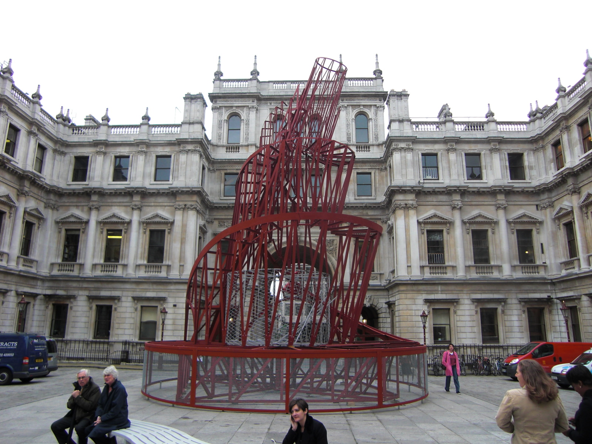
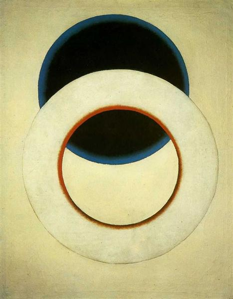
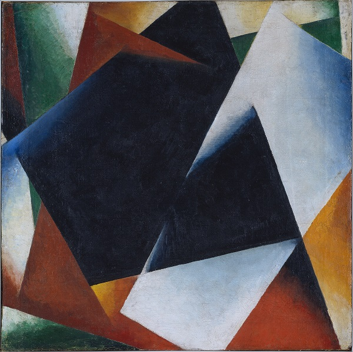
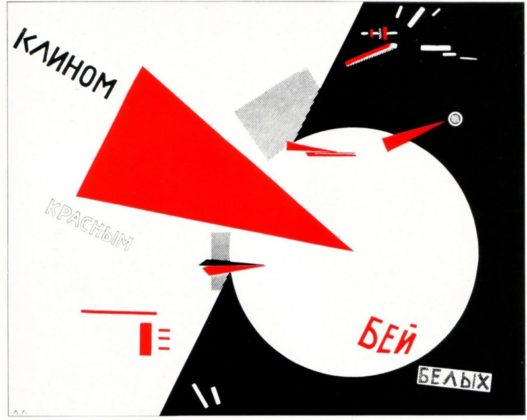
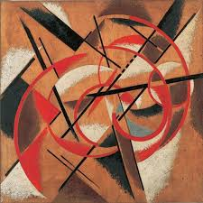

Art Dig e hist del arte moderno
Constructivismo ruso: historia, características, arquitectura.
El constructivismo ruso fue un movimiento artístico muy influyente que floreció en Rusia en el siglo XX y evolucionó cuando los bolcheviques llegaron al poder en la Revolución de octubre de 1917. A través de este movimiento de arte moderno, se expresaron muchos de los avanzados artistas soviéticos que apoyaban los objetivos de la revolución.
En sí, se trataba de un enfoque nuevo para la creación de objetos, aunque tomó ideas del cubismo, suprematismo y el futurismo. En resumen, su objetivo era abolir la preocupación artística tradicional por la composición y reemplazarla por “construcción”.

Vladimir Tatlin
El constructivismo ruso exigía un análisis técnico cuidadoso de los materiales modernos. Esta investigación debía finalmente producir ideas útiles para la producción en masa, al servicio de los fines de una sociedad comunista.
Sin embargo, el movimiento fracasó al tratar de hacer la transición del estudio del artista a la fábrica. Algunos continuaron insistiendo en el valor del trabajo analítico abstracto y el valor del arte en sí. Varios de estos artistas tuvieron un gran impacto en la difusión del constructivismo en toda Europa.
Por su parte, otros avanzaron a una fase nueva pero de corta duración conocida como productivismo. Estos artistas trabajaron en la industria, pero sin el mismo éxito del constructivismo ruso.
Historia
En 1917, Kasimir Malevich utilizó el término Arte de la construcción para describir, despectivamente, la obra de Alexander Rodchenko. Sin embargo, Vladimir Yevgrafovich Tatlin fue quien por primera vez expresó las ideas constructivistas.

Alexander Rodchenko, 1935
Tatlin había visitado a Picasso en París. A su regreso, comenzó a producir sus Construcciones en relieve. Se trataba de una serie de esculturas realizadas con material de deshecho que imitaban la obra del artista español.
Mientras tanto, después de la toma de poder bolchevique, dos grupos de influyentes pintores abstractos moscovitas entraron en pugna. El primero prefirió adherirse al arte puro, o arte concreto.
Por su parte, el segundo grupo, que incluía a Tatlin, consideró que las bellas artes tradicionales estaban muertas. Estos optaban por el trabajo utilitario y propagandístico. Este último grupo ganó y se hizo conocido como “constructivistas” o “artistas-ingenieros”.
En 1922, Alexei Gan, teórico del movimiento, emitió un Manifiesto constructivista. Luego, se prohibió el arte de caballete y se obligó a los pintores y escultores a cambiar al diseño industrial. Muchos artistas descontentos abandonaron Rusia. La creatividad para los que permanecieron fue rígidamente controlada.
A mediados de la década de 1920, el constructivismo ruso estaba en declive. Esto, en parte, se debió a la creciente hostilidad del régimen bolchevique al arte de vanguardia.
Sin embargo, continuó siendo una inspiración para los artistas de Occidente. Un movimiento llamado Constructivismo internacional floreció en Alemania en la década de 1920. Su legado perduró hasta la década de 1950.
Características del constructivismo ruso
Es una filosofía
El constructivismo ruso se consideraba más una filosofía que solo un estilo. Esta filosofía reflejaba una creencia en el arte para el cambio social y no como una expresión personal.Sus partidarios abogaban por el arte y el diseño funcional en lugar del arte decorativo y expresivo. Estas ideas calaron en el ánimo revolucionario del momento. La cultura burguesa estaba siendo reemplazada por el movimiento proletario revolucionario.
Aceptación de la modernidad
Al igual que con el futurismo, una de las características principales del constructivismo ruso era la aceptación de la modernidad. En general, se trataba de un arte totalmente abstracto, con énfasis en las formas geométricas y la experimentación.
El arte constructivista era optimista, pero no tendía a ser emocional, privilegiando las formas objetivas y universales.
Minimalismo
Se buscaba un nuevo orden en el arte, con la experimentación de nuevos medios. Una característica de este estilo era el minimalismo, simplificando todo al nivel más fundamental.
El nuevo arte para el nuevo orden debería conducir a una mayor comprensión, paz y unidad. Esto, a su vez, tendría un impacto en los problemas sociales y económicos del momento.
Arquitectura
Uno de los propósitos de la arquitectura constructivista era inculcar la vanguardia en la vida cotidiana. El constructivismo ruso buscaba construir los espacios en los que se podría lograr la nueva utopía socialista.
Se crearon entonces proyectos utilitarios para los trabajadores. Pero también se diseñaron proyectos extravagantes como Flying City de Gyorgy Krutikov. Este proyecto se concibió como una propuesta seria para viviendas en el aire.

Flying City de Gyorgy Krutikov
De esta manera, estos extremos demostraban las tensiones entre el individualismo y el utilitarismo en el constructivismo. Por un lado, se promovía una mayor igualdad de la sociedad y, por el otro, ofrecieron algunos proyectos grandiosos e incluso temerarios
Diseño
Las herramientas y técnicas de la pintura figurativa más tradicional y los estilos de arte fueron reemplazados por fotomontajes “construidos” y una fuerte tipografía.
El constructivismo ruso característicamente tenía paletas de colores mínimos. En general, solo utilizaban el rojo y negro, y a veces amarillo. Eran comunes los elementos diagonales con tipo e imágenes circulares y en ángulo.
Así, el resultado era extremadamente dramático, con imágenes en capas combinadas con tipografía potente. Este arte ha sido descrito como emocionante, estremecedor e incluso impactante. Este movimiento significó un cambio dramático de movimientos y filosofías de arte más convencionales.
Originalmente, el estilo constructivista estaba destinado a mensajes políticos. No obstante, se filtró en anuncios de productos y carteles de todo tipo, así como en portadas y partes interiores de libros.
Obras y autores destacados
Algunos famosos artistas del movimiento son Vladimir Tatlin, Georgii y Vladimir Stenberg, Alexander Rodchenko, Liubov Popova y El Lissitzky.Por otro lado, la pieza más famosa de Tatlin es su Monumento a la Tercera Internacional. Este proyecto no se llevó a cabo, pero marcó su primera incursión en la arquitectura.
El monumento se convirtió en un símbolo de la arquitectura vanguardista rusa y del Modernismo internacional. La maqueta es un armazón de hierro de 6.7 m de altura en el que descansaba un cilindro giratorio, cubo y cono.
Modelo de la Torre de Tatlin, Royal Academy, Londres.
Debido a la desaprobación oficial de la pintura de caballete, la mayoría de las obras constructivistas aparecen en forma de diseños textiles, arquitectura o diseños industriales. Entre las obras más famosas están:
Círculo blanco (Rodchenko)
Círculo blanco (Rodchenko)
Arquitectura pictural (Popova)
Arquitectura pictórica (Popova)
Golpead a los blancos con la cuña roja (Lissitzky)
Golpead a los blancos con la cuña roja Globetrotter (en el tiempo) (Lissitzky)
Globetrotter (en el tiempo) (Lissitzky) Construcción espacio y fuerza (Popova)
Construcción espacio y fuerza (Popova)